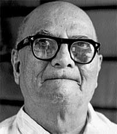

ಮೈಸೂರು
ಡಿ.ವಿ.ಜಿ. ಕಾಣಿಸಿದ ಮೈಸೂರು

-ಕೆ.ಎಸ್. ಮಧುಸೂದನ
ಒಂದು ಸಂಪೂರ್ಣ ಕೈಪಿಡಿಯಂತಿರುವ ಈ ಗ್ರಂಥದ ಮುನ್ನುಡಿಯಲ್ಲಿ ಇದೇ ಲೇಖಕರು 1915ರಲ್ಲಿ ಕನ್ನಡ ಮತ್ತು ಇಂಗ್ಲಿಷ್ ಎರಡು ಭಾಷೆಗಳಲ್ಲಿಯೂ ಇಂಥದೊಂದು ಸಣ್ಣ ಕೃತಿಯನ್ನು ಪ್ರಕಟಿಸಿದ್ದರೆಂಬ ಮಾಹಿತಿ ಇದೆ.
ಡಿ.ವಿ.ಜಿ. ಎಂಬ ಮೂರಕ್ಷರದಿಂದ ಮನೆಮಾತಾಗಿರುವ ಡಿ.ವಿ.ಗುಂಡಪ್ಪನವರು ಪ್ರಖ್ಯಾತ ಕನ್ನಡ ಲೇಖಕರು, ನಿಜ. ಆದರೆ ಅವರು ಇಂಗ್ಲಿಷ್ನಲ್ಲಿಯೂ ಬರೆದದ್ದುಂಟೆ? ಹೌದು ಎನ್ನುವುದಕ್ಕೆ ‘ಆಲ್ ಎಬೌಟ್ ಮೈಸೂರ್’ (ALL ABOUT MYSORE) ಎಂಬ ಕೃತಿ ಒಂದು ನಿದರ್ಶನ. 1931ರಲ್ಲಿ ಈ ಕೃತಿ ‘ಕರ್ನಾಟಕ ಪಬ್ಲಿಷಿಂಗ್ ಹೌಸ್’ ಎಂಬ ಸಂಸ್ಥೆಯಿಂದ ಪ್ರಕಟವಾಗಿದೆ.
ಒಂದು ಸಂಪೂರ್ಣ ಕೈಪಿಡಿಯಂತಿರುವ ಈ ಗ್ರಂಥದ ಮುನ್ನುಡಿಯಲ್ಲಿ ಇದೇ ಲೇಖಕರು 1915ರಲ್ಲಿ ಕನ್ನಡ ಮತ್ತು ಇಂಗ್ಲಿಷ್ ಎರಡು ಭಾಷೆಗಳಲ್ಲಿಯೂ ಇಂಥದೊಂದು ಸಣ್ಣ ಕೃತಿಯನ್ನು ಪ್ರಕಟಿಸಿದ್ದರೆಂಬ ಮಾಹಿತಿ ಇದೆ. ಒಟ್ಟು 141 ಪುಟಗಳಿರುವ, 22 ಅಧ್ಯಾಯಗಳಿರುವ, 30 ಕಪ್ಪು-ಬಿಳುಪು ಛಾಯಾಚಿತ್ರಗಳಿರುವ ಈ ಪುಸ್ತಕ ‘ದಿ ಬೆಂಗಳೂರು ಪ್ರೆಸ್’ನಲ್ಲಿ ಒಂದೇ ಒಂದು ಅಚ್ಚಿನ ದೋಷವಿಲ್ಲದೆ ಪ್ರಕಟಗೊಂಡಿದೆ.
‘ಆಲ್ ಎಬೌಟ್ ಮೈಸೂರ್’ ಕೃತಿ ಮೈಸೂರು ರಾಜ್ಯದ ಸಮಗ್ರ ಪರಿಸ್ಥಿತಿಯನ್ನು ಓದುಗರಿಗೆ ಪರಿಚಯಿಸುತ್ತದೆ. ಇದರ ಪರಿವಿಡಿಯನ್ನು ಗಮನಿಸಿ:
ಭೌತಿಕ ಲಕ್ಷಣಗಳು, ಸಸ್ಯ ಮತ್ತು ಜಂತುಗಳು, ಭೂ ವಿಜ್ಞಾನ ಮತ್ತು ಗಣಿಗಾರಿಕೆ, ಭಾಷೆ, ಚರಿತ್ರೆ, ಸರಕಾರ, ಶಿಕ್ಷಣ, ಕೈಗಾರಿಕೆ ಹಾಗೂ ವಾಣಿಜ್ಯ, ಕಲೆ ಹಾಗೂ ವಾಸ್ತುಶಿಲ್ಪ, ವ್ಯವಸಾಯ ಹಾಗೂ ರೇಷ್ಮೆ ವಿಜ್ಞಾನ, ವೈದ್ಯಕೀಯ ಹಾಗೂ ಆರೋಗ್ಯ, ರಾಜ್ಯದ ಆರ್ಥಿಕ ಪರಿಸ್ಥಿತಿ, ಜನಗಣತಿ ಹಾಗೂ ಇತರೆ ವಿಷಯಗಳು, ಬೆಂಗಳೂರು, ಶ್ರಿರಂಗ ಪಟ್ಟಣ, ಮೈಸೂರು, ರಾಜ್ಯಸ್ಥಳ ವಿಚಾರ (ಗೆಜೆಟಿಯರ್), ಸಂಘಸಂಸ್ಥೆಗಳು, ಅನುಕ್ರಮೀ ದಿವಾನರುಗಳು, ರಾಜ್ಯದ ಕೆಲವು ಪ್ರಮುಖ ಅಧಿಕಾರಿಗಳು- ಹೀಗೆ ಒಟ್ಟು ಇಪ್ಪತ್ತು ಅಧ್ಯಾಯಗಳನ್ನು ಪುಸ್ತಕ ಹೊಂದಿದೆ.
ಈ ಪುಸ್ತಕ ಇಂದು ಕೂಡ ಹಳೆಯ ಮೈಸೂರು ರಾಜ್ಯದ ಅಧ್ಯಯನ ಮಾಡಬಯಸುವವರಿಗೆ ಅನೇಕ ಅಪೂರ್ವ ಮಾಹಿತಿಗಳನ್ನು ಒದಗಿಸುವಂತಿದೆ. ಉದಾಹರಣೆಗೆ 18ನೆಯ ಅಧ್ಯಾಯದಲ್ಲಿ, ಮೈಸೂರು ರಾಜ್ಯದಲ್ಲಿ ಅಂದು ಪ್ರಸಿದ್ಧಿಯನ್ನು ಪಡೆದಿದ್ದ 13 ಸಂಘಸಂಸ್ಥೆಗಳ ವಿವರಗಳಿವೆ: ಬೆಂಗಳೂರಿನ ಸೌತ್ ಇಂಡಿಯನ್ ಸೈನ್ಸ್ ಅಸೋಸಿಯೇಷನ್, ಮೈಸೂರ್ ಇಂಜಿನಿಯರ್ಸ್ ಅಸೋಸಿಯೇಷನ್, ಮೈಸೂರ್ ಚೇಂಬರ್ ಆಫ್ ಕಾಮರ್ಸ್, ಮಿಥಿಕ್ ಸೊಸೈಟಿ ಸೇರಿದಂತೆ ಇನ್ನೂ ಹತ್ತು ಸಂಸ್ಥೆಗಳ ವಿವರಗಳಿವವೆ. ಸಂಘಸಂಸ್ಥೆಗಳ ಸ್ಥಾಪನೆ, ಧ್ಯೇಯೋದ್ದೇಶಗಳು, ಕಾರ್ಯಕಾರೀ ವರ್ಗ, ಸದಸ್ಯರ ಸಂಖ್ಯೆ, ಅವು ಪ್ರಕಟಿಸುವ ವಾರ್ತಾಪತ್ರ ಇವುಗಳನ್ನೊಳಗೊಂಡ ಸಮಗ್ರ ಪರಿಚಯವನ್ನು ಅಧಿಕೃತ ದಾಖಲೆಗಳ ಸಮೇತ ನೀಡಲಾಗಿದೆ.
ರಾಜ್ಯದ ಕೆಲವು ಪ್ರಮುಖ ಅಧಿಕಾರಿಗಳು ಎಂಬ ಅಧ್ಯಾಯದಲ್ಲಿ ಅಂದಿನ ಮೈಸೂರು ರಾಜ್ಯದ 31 ಮಂದಿ ಪ್ರಮುಖ ಅಧಿಕಾರಿಗಳ ಪಟ್ಟಿಯನ್ನೂ, ಅವರು ಪಡೆಯುತ್ತಿದ್ದ ಸಂಬಳದ ಮೊತ್ತವನ್ನೂ ದಾಖಲಿಸಲಾಗಿದೆ. ಈ ಪಟ್ಟಿಯ ಪ್ರಕಾರ ಅಂದಿನ ಮೈಸೂರು ಹೈಕೋರ್ಟಿನ ಮುಖ್ಯ ನ್ಯಾಯಾಧೀಶರು ರಾಜಧರ್ಮ ಪ್ರವೀಣ ಸಿ.ಎಸ್.ದೊರೆಸ್ವಾಮಿ ಅಯ್ಯರ್. ಅವರ ಸಂಬಳ 2,500 ರೂಪಾಯಿ. ಮೈಸೂರು ವಿಶ್ವವಿದ್ಯಾನಿಲಯದ ಉಪಕುಲಪತಿ ಡಾ. ಇ.ಪಿ.ಮೆಟ್ಕ್ಲಾಫ್. ಅವರ ಸಂಬಳ 1,750 ರೂಪಾಯಿ. ಸೆನ್ಸಸ್ ಸೂಪರಿಂಟಿಂಡೆಂಟ್ ಆಗಿದ್ದವರು ಮಾಸ್ತಿ ವೆಂಕಟೇಶ ಅಯ್ಯಂಗಾರ್. ಅವರ ಸಂಬಳ 1,000 ರೂಪಾಯಿ. ಲಂಡನ್ನಿನಲ್ಲಿ ಟ್ರೇಡ್ ಕಮಿಷನರ್ ಆಗಿದ್ದವರು ಸಿ.ರಂಗನಾಥ ರಾವ್. ಅವರ ಸಂಬಳ 1,600 ಪೌಂಡುಗಳು.
ಶಿಕ್ಷಣ ಎಂಬ ಅಧ್ಯಾಯದಲ್ಲಿ- ಸಾರ್ವಜನಿಕ ಶಿಕ್ಷಣ ಇಲಾಖೆ, ಮೈಸೂರು ವಿಶ್ವವಿದ್ಯಾಲಯ ಹಾಗೂ ಇಂಡಿಯನ್ ಇನ್ಸ್ಟಿಟ್ಯೂಟ್ ಆಫ್ ಸೈನ್ಸ್- ಮೂರು ಸಂಸ್ಥೆಗಳ ಕಿರು ಪರಿಚಯವಿದೆ. ಮೈಸೂರು ವಿಶ್ವವಿದ್ಯಾಲಯದ ಅಧೀನ ಕಾಲೇಜುಗಳಾದ ಮೈಸೂರಿನ ಮಹಾರಾಜ ಕಾಲೇಜು, ಮಹಾರಾಣಿ ಕಾಲೇಜು, ಮೆಡಿಕಲ್ ಕಾಲೇಜು, ಬೆಂಗಳೂರಿನ ಸೆಂಟ್ರಲ್ ಕಾಲೇಜು- ಇವುಗಳ ವಿವರಗಳಿವೆ. ಸೆಂಟ್ರಲ್ ಕಾಲೇಜಿನ ವಿದ್ಯಾರ್ಥಿಗಳಿಗೆ ಒಂದು ವಿದ್ಯಾರ್ಥಿ ನಿಲಯವಿದ್ದದ್ದರ ಬಗ್ಗೆ ಪ್ರಸ್ತಾಪವಿದೆ. ಬೆಂಗಳೂರಿನ ನ್ಯಾಷನಲ್ ಹೈಸ್ಕೂಲಿನಲ್ಲಿ 1930ರಲ್ಲಿ 297 ವಿದ್ಯಾರ್ಥಿಗಳು ವ್ಯಾಸಂಗ ಮಾಡುತ್ತಿದ್ದರೆಂಬ, 91 ವಿದ್ಯಾರ್ಥಿಗಳು ಎಸ್.ಎಸ್.ಎಲ್.ಸಿ ಪರೀಕ್ಷೆಗೆ ಕಟ್ಟಿದರೆಂಬ ವಿವರವೂ ಇದೆ.
1911ರ ಜುಲೈ 24ರಂದು ಸ್ಥಾಪನೆಗೊಂಡ ‘ಇಂಡಿಯನ್ ಇನ್ಸ್ಟಿಟ್ಯೂಟ್ ಆಫ್ ಸೈನ್ಸ್’ ಸಂಸ್ಥೆಯ ಬಗೆಗೆ, ಅದರ ಧ್ಯೇಯೋದ್ದೇಶ, ಗ್ರಂಥಾಲಯ, ಪ್ರಯೋಗಾಲಯಗಳು, ಚೇರುಗಳು, ಇತ್ಯಾದಿಗಳ ಬಗ್ಗೆ ಮಾಹಿತಿ ಇದೆ. ಆ ಸಂಸ್ಥೆಯ ಗ್ರಂಥಾಲಯದಲ್ಲಿದ್ದ ಪುಸ್ತಕಗಳ ಸಂಖ್ಯೆ-18,941. 1930-31ರಲ್ಲಿ ಸಂಸ್ಥೆಯ ಆದಾಯ ರೂ. 5,94,384; ವೆಚ್ಚ ರೂ. 5,40,711.
ಸರ್ ಸಿ.ವಿ.ರಾಮನ್ ಅವರು ತಮಗೆ ನೊಬೆಲ್ ಬಹುಮಾನ ತಂದುಕೊಟ್ಟ ‘ರಾಮನ್ ಎಫೆಕ್ಟ್’ ಎಂಬ ಶೋಧವನ್ನು ಪ್ರಥಮ ಬಾರಿಗೆ ಘೋಷಿಸಿದ್ದು ‘ಸೌತ್ ಇಂಡಿಯನ್ ಸೈನ್ಸ್ ಅಸೋಸಿಯೇಷನ್’ ಎಂಬ ಬೆಂಗಳೂರಿನ ಸಂಸ್ಥೆಯಲ್ಲಿ.
ಭಾಷೆ ಎಂಬ ಅಧ್ಯಾಯದಲ್ಲಿ ಡಿ.ವಿ.ಜಿ. ಅವರು ‘ಕುಮಾರವ್ಯಾಸ ಭಾರತ’ವನ್ನು ಕುರಿತು ಬರೆದಿರುವ ಈ ಮಾತುಗಳನ್ನು ಗಮನಿಸಿ: This is perhaps the grandest epic poem in the language. For vastness of conception, for vividness of portraiture, for the variegated splendors of a colossal and complex drama, for the sweep of imagination that can reproduce for us the
varying notes mixed in a mighty clash of human forces - avarice, indignation, pity, melancholy, love, hate, scorn, irony, desperation, terror, heroism, nobility, envy, meanness, magnanimity, faith, hope for a sustained spiritual idealism and a kindly and manful attitude towards life , as well as for naturalness and freedom and vigour of style, this work stands supreme.
ಒಟ್ಟಿನಲ್ಲಿ, ಸಾರ್ವಜನಿಕರ ಗಮನಕ್ಕೆ ಅಷ್ಟಾಗಿ ಬಾರದ ಒಂದು ಅಮೂಲ್ಯ ಅಪೂರ್ವ ಕೃತಿ ಇದು.ಅವರು ಇನ್ನೂ ಏಳೆಂಟು ಸಣ್ಣಪುಟ್ಟ ಇಂಗ್ಲಿಷ್ ಪುಸ್ತಕಗಳನ್ನು ಬರೆದಿರುವುದುಂಟು.